Equipment and electrodes
Before the Portiloop can detect anything, ten electrodes must be on the right spots, on clean skin, with good contact, and plugged into the right pins. This page follows the lab's CLAS protocol step by step, quotes its wording, and explains the reasons behind each step.
In this tutorial you will
- Check the material and connect the electrodes to the right pins.
- Learn the montage: which electrode goes where, which channel records it, and why it is there.
- Find Fpz, Fz and Cz from two tape measurements, with a calculator that reproduces the protocol's table.
- Prepare the skin, apply gel and tape, and place the reference, bias, EOG, EMG and ECG electrodes.
- Understand what reference, bias and impedance mean in plain terms, and avoid the common mistakes.
The material
The protocol lists 13 items ("Required materials"):
- Portiloop
- Portiloop Electrodes
- Earphones
- Medical tape cut into proper pieces (squares/rectangles)
- Cotton swab
- Alcohol wipes
- Gauze
- Portiloop battery and cable
- Measuring tape
- Nuprep exfoliant
- EEG Gel
- Tape for shoulder and bedside table
- Toothbrush
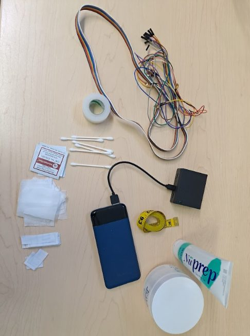
The protocol adds: "Make sure that the battery is properly charged. If not, please plug it in. You can check the battery by pressing the button on the top left side of the battery". The phone in the photo is the one you will use to run the Control Center (Tutorial 03). The protocol does not say what the toothbrush is for.
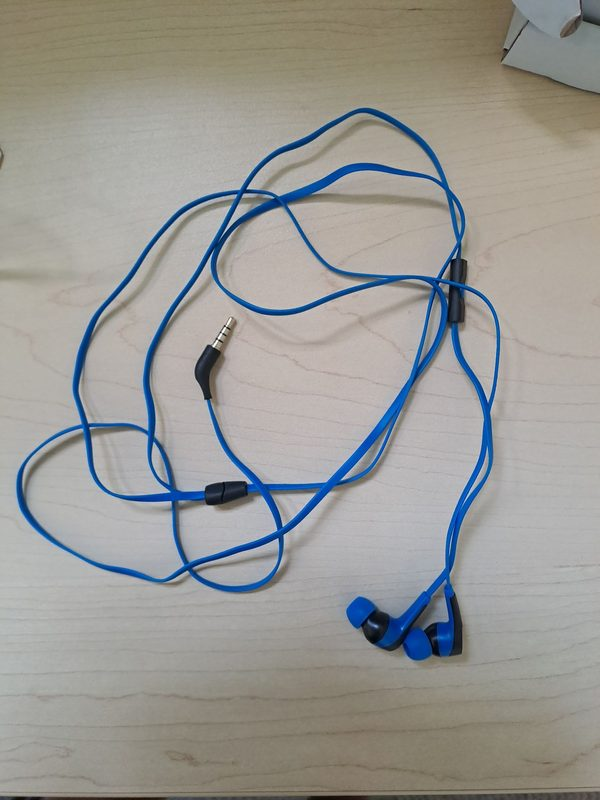
Connecting the electrodes
All the electrodes end in one connector of 10 pins on the Portiloop. The protocol notes: "You do not need to take off the cover". The photo below was taken with the cover off, to show the pins and the colour of the wire that goes on each.
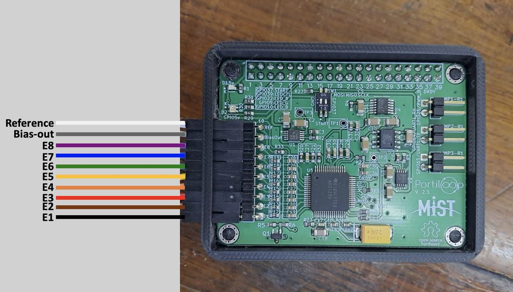
The number of the pin is the number of the channel: the Check tab of the Control Center says "chN is the electrode on pin N of the connector". So the black wire on E1 is recorded as ch1 and appears as the column raw_ch1 in the file, and so on. The two top pins, Reference and Bias-out, are not channels: they are not recorded as columns of their own (see Reference and bias).
The montage
The lab's illustration shows where each electrode goes, how to measure the scalp positions, and the pin colours:
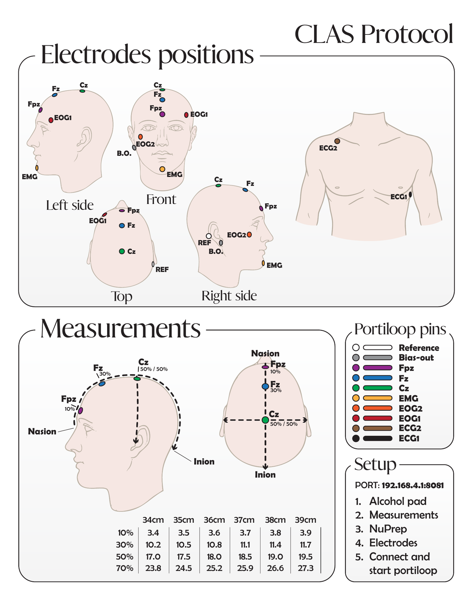
The protocol stresses one point: "the red electrode (EOG1) is on the left side of the face; the orange electrode (EOG2) is on the right side of the face." The table gathers the protocol's placement, its channel list ("ch1 corresponds to ECG1 (black electrode)", and so on) and the reason for each electrode.
| Electrode | Colour | Pin | Channel | Location (protocol) | What it records | Why it is there |
|---|---|---|---|---|---|---|
| Reference | white | Reference | none | "over the bone directly behind the right ear" (mastoid) | Nothing on its own: every channel is measured relative to it. | A common reference, on bone with little brain activity under it, shared by all 8 channels. |
| Bias-out | grey | Bias-out | none | "on the right earlobe" | Nothing: it drives the body. | Holds the body at the amplifier's working voltage and reduces mains interference. |
| Fpz | purple | E8 | ch8 | forehead, midline, 10% of nasion to inion | Frontal EEG, with a strong share of eye movements and blinks. | Frontal EEG for the analysis; with Cz, it gives the Fpz minus Cz derivation read by the offline automatic sleep staging of Tutorial 06 (docs/tools/stage_night.py). |
| Fz | blue | E7 | ch7 | midline, 30% of nasion to inion | Frontal EEG. | Slow oscillations are large over frontal areas (see below); a second EEG site for the analysis. |
| Cz | green | E6 | ch6 | vertex, 50% of nasion to inion and of ear to ear | Central EEG. | The detection channel: the Portiloop detects slow waves and times the sounds on this signal. |
| EMG | yellow | E5 | ch5 | "in the middle of the chin" | Chin muscle activity. | Muscle tone, needed to score sleep stages (for example, low tone in REM sleep) and to spot movements. |
| EOG2 | orange | E4 | ch4 | "at the bottom right of the right eye" | Eye movements. | Needed to score wake and REM sleep; one electrode above one eye and one below the other. |
| EOG1 | red | E3 | ch3 | "at the top left of the left eye" | Eye movements. | As EOG2. |
| ECG2 | brown | E2 | ch2 | "right upper chest, below the clavicle" | Heart activity. | Heart rate; the two ECG electrodes are placed "diagonally across chest". |
| ECG1 | black | E1 | ch1 | "left upper abdomen, just below the rib cage" | Heart activity. | As ECG2. |
This is also the "default" montage of the analysis package (("ECG1", "ECG2", "EOG1", "EOG2", "EMG", "Cz", "Fz", "Fpz") in recording.py), so the analysis tutorials read the files with the right names if you follow the protocol.
Measuring Fpz, Fz and Cz
The three scalp electrodes follow the international 10-20 system [2]: positions are fractions of head measurements, so that they fall on comparable brain areas in heads of different sizes. The protocol uses two measurements:
- Nasion to inion. "Use a measuring tape to measure the distance between the nasion (at the bridge of the nose, between the eyes) and the inion (at the back of the head)." Then "divide it by 2, and remember that value and where it falls on your head." This is Cz along the midline.
- Ear to ear. "Use a measuring tape to measure the distance between the middle of one ear, to the middle of the other ear." Then "divide it by 2 and that spot should correspond to the same one you identified while measuring from the nasion to the inion." The two halves cross at Cz: if they do not, measure again.
- Fpz. "Position the electrode at 10% of the total distance between the nasion [...] and the inion".
- Fz. "Position the electrode at 30% of the total distance [...]. The position of the Blue electrode should correspond to the middle of the distance between the Purple electrode and the Green electrode." This is a free check: 30% is halfway between 10% and 50%.
All distances are measured from the nasion, along the midline over the top of the head. The protocol sheet gives a table for common head sizes; the calculator below reproduces it for any size.
Skin preparation
Good contact needs clean skin: the outer layer of the skin is dead and dry, and skin oil insulates. The protocol uses two products: alcohol wipes to degrease, and Nuprep, a mildly abrasive gel, to remove the outer layer on the sites that matter most. Its order on the sheet is "1. Alcohol pad 2. Measurements 3. NuPrep 4. Electrodes 5. Connect and start portiloop". The protocol's "Skin preparation" section says:
- "First use an alcohol wipe to clean the following areas: Back of the right ear; Right earlobe; One spot at the lower outer side of your right eye and one spot at the upper outer side of your left eye (see image above); The middle of the chin"
- "Use Nuprep exfoliant to clean the back of the right ear"
- "Tape the electrodes cables to the right shoulder"
For the scalp, the protocol uses a cotton swab with Nuprep on each spot: "rubbing the area, back and forth and side to side, to try to clear the area of any surrounding hair as much as possible. It is normal for the area to turn slightly red". For Fpz: "clean it with an alcohol wipe and exfoliate it after."
Gel, placement and tape
The protocol places the electrodes in this order: bias, reference, Cz, Fpz, Fz, EMG, EOG, ECG. Each placement follows the same pattern:
- Gel. "scoop up some EEG gel" with the electrode cup. The gel fills the gap between the metal and the skin and makes the electrical contact.
- Press. Press the electrode onto the prepared spot ("press down firmly using medical gauze" for Cz and Fz, "using medical tape" for Fpz and the chin). "You should see a ring of goo around the electrode".
- Orient the wire. "Make sure that the “tail” of the electrode is facing backwards, so that it is not in your face all night."
- Secure and test. Tape the electrode. "Tug on the electrode slightly and if the skin moves with it then, good job, your electrode is secure".
Finally, the cables are taped to the right shoulder (skin preparation step 3) and, after the earphones are in, "Secure the electrode cables to the bedside table using tape." Taping the cable at two points means that when the sleeper turns, the pull goes to the tape, not to the electrodes.
The electrodes in place
The photos of the protocol show each electrode on a member of the lab, who agreed to their publication. The labels on the photos give the pin of each electrode on the connector (E1 to E8).
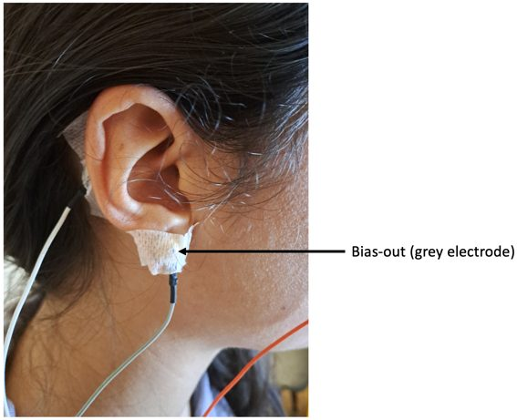
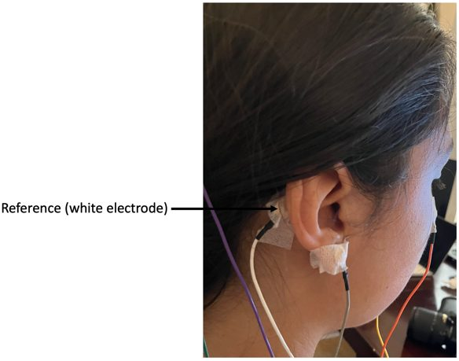
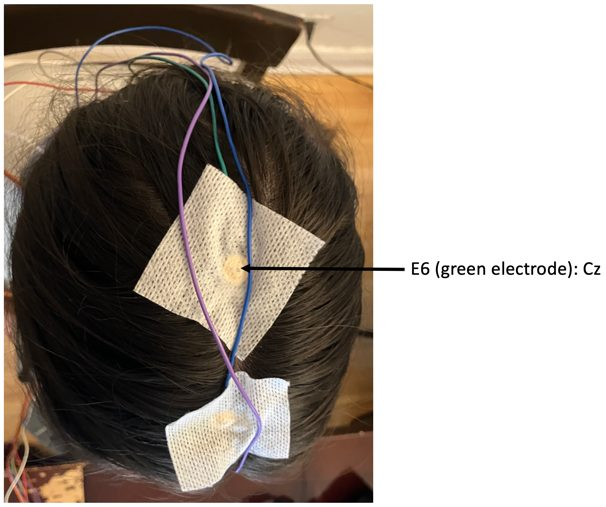
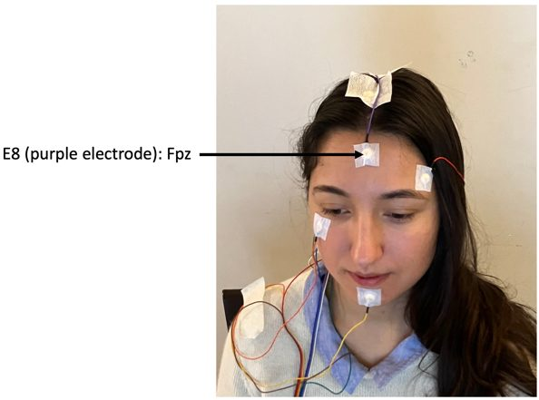
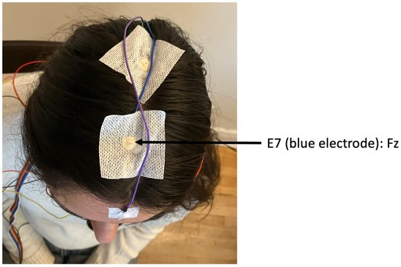
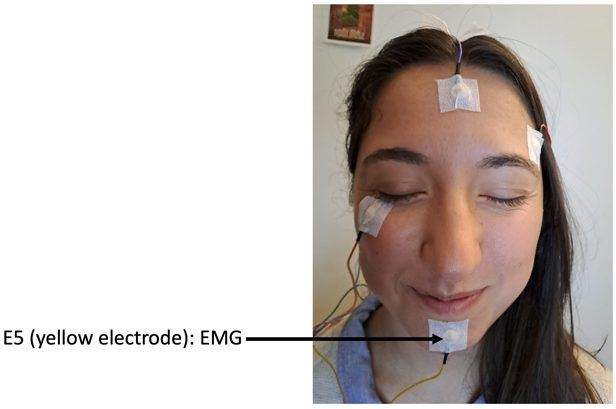
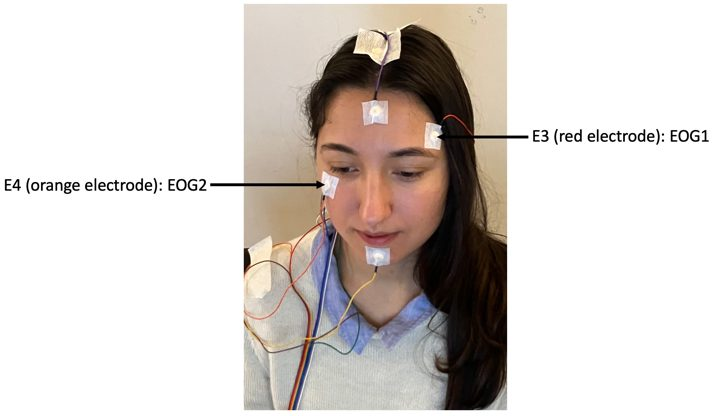
Reference and bias, in plain terms
The reference (white, behind the right ear). An EEG amplifier never measures the voltage of one point; it measures the difference between two points. On the Portiloop, every channel is "its electrode minus the reference". If the reference moves, becomes noisy or falls off, every channel shows it. The protocol places it "over the bone directly behind the right ear" (the mastoid), a common choice because there is little brain tissue directly under it. In the code, the reference reaches the amplifier through a pin called SRB1 (0x20, # Enable SRB1 in config_hardware.py).
The bias (grey, right earlobe). The body of a sleeper picks up the mains voltage of the room (a large signal at 50 or 60 Hz, the same on every electrode) and drifts in voltage. The bias electrode is the amplifier's ground connection with feedback (often called a "driven right leg" in ECG): the amplifier senses the average voltage of the electrodes and drives the body, through the bias electrode, towards its own mid-supply voltage. This keeps all inputs within the amplifier's range and reduces the part of the mains interference common to all electrodes. In the code, the bias amplifier uses an internal mid-supply reference (BIASREF_INT, CONFIG3 = 0xFC), and every recorded channel feeds the bias loop (BIAS_SENSP and BIAS_SENSN).
Two consequences you will meet in the Check tab (Tutorial 03):
- The reference impedance cannot be measured, only whether it is connected: "The impedance of the reference cannot be measured, only its connection." If it is off, the tab says "The reference electrode is off: reconnect it to measure the electrodes."
- If the bias is off, all electrodes look off: "All electrodes are off: check the ground (bias) electrode first."
The bias loop is also why a single fallen electrode matters: the lead-off code explains that "a fallen electrode leaves its input floating. As every recorded channel is part of the bias loop (BIAS_SENSP/N), a floating input drives the bias amplifier and degrades all the other channels." The device removes such electrodes from the loop during the night (Tutorial 04).
EOG, EMG and ECG
- EMG (yellow). "Position the electrode in the middle of the chin. If not accessible (because of hair), put it slightly to the side." Then gel, tape, tail backwards and the tug test.
- EOG2 (orange). "Find the spot at the bottom right of the right eye", clean it with an alcohol wipe, "Put gel on the electrode and use medical tape to secure it in its spot".
- EOG1 (red). "Find the spot at the top left of the left eye", same procedure. The protocol sheet shows both at the outer corners of the eyes.
- ECG (brown and black). "ECG electrodes: bipolar electrodes diagonally across chest". The participant may place them: "Demonstrate how to position the electrodes and let the participant place them on themselves, unless they would prefer assistance." Brown (ECG2): "Use an alcohol wipe to clean up the right upper chest, below the clavicle", then gel and tape. Black (ECG1): "Use an alcohol wipe to clean up the left upper abdomen, just below the rib cage", then gel and tape.
Why impedance matters
The impedance of an electrode is how much the skin-gel-electrode contact resists a small alternating current, in kilo-ohms (kΩ). Low impedance means good contact. The Check tab of the Control Center measures it for each channel by injecting a tiny current (6 nA at 31.25 Hz) and colours the result (DEFAULT_THRESHOLDS_KOHM = (10, 25) in impedance_display.py):
- green below 10 kΩ;
- yellow 10 to 25 kΩ;
- red 25 kΩ or more, or OFF;
- grey uncertain (below 1 kΩ, which is within the accuracy of the measurement, a saturated channel, or not measured).
The protocol: "Good impedance levels should be displayed in green." If not, "please check the signals first (in the panel Output, select the channel of interest). If the signals are not good, redo the electrode positioning (remove the electrode, check if the amount of gel is sufficient and add more if not, replace the electrode and press on it)."
Why it matters: a poor contact does not add much noise by itself, but it makes the recording more sensitive to everything around it. Mains interference reaches the input more easily, and slow voltage changes of the skin (sweat, movement) show up as drifts. A study that recorded the same EEG with low and high impedance found that "Low-frequency noise was found to be increased at high-impedance sites relative to low-impedance sites, especially when the recording environment was warm and humid" [3]. For CLAS this is critical, because slow drifts fall in the same frequency band as the slow waves the Portiloop detects (Tutorial 01): a filter cannot remove them without removing the slow waves too, and the detector cannot tell them apart.
The impedances of the tutorial night
The last impedance check before the tutorial night is stored in its _metadata.json:
| Channel | Electrode | Impedance | Colour in the Check tab |
|---|---|---|---|
| ch1 | ECG1 | 177.5 kΩ | red |
| ch2 | ECG2 | 156.0 kΩ | red |
| ch3 | EOG1 | 78.3 kΩ | red |
| ch4 | EOG2 | 11.6 kΩ | yellow |
| ch5 | EMG | 4.4 kΩ | green |
| ch6 | Cz | 20.6 kΩ | yellow |
| ch7 | Fz | 2.3 kΩ | green |
| ch8 | Fpz | 8.5 kΩ | green |
| REF | Reference | connected | connected |
Cz, the detection channel, was yellow (20.6 kΩ): usable, but a better contact would have been worth a second try. The ECG channels were high, which the protocol expects: "It is normal that the impedance levels of ch1 (ECG1) and ch2 (ECG2) are not good, because they are far away from the reference electrode."
What is real and what is not in this widget. The signal is 10 s of real Cz from the tutorial night (deep sleep: seconds 9 to 19 of the 30 s excerpt of Tutorial 01, which starts at minute 123.0; its electrode measured 20.6 kΩ), shown band-passed 0.3 to 35 Hz, before any noise is added. The thermal noise is computed with the Johnson formula √(4kTRB) for a resistor equal to the impedance, at 37 °C, over 34.7 Hz of bandwidth. The amounts of mains hum and drift are illustrative: we made them grow in proportion to the impedance (0.6 µV and 0.5 µV of amplitude per kΩ) to show the effect; they are not a model of the Portiloop, of a room or of a person. Real interference depends on the room, the cables, the difference in impedance between electrodes and the bias contact. The notch is the device's own filter at 250 Hz (the coefficients of custom_processors.py).
Common mistakes
A checklist to run through before Start. The boxes are only for you; nothing is saved.
Exercises
A small head
A participant measures 33 cm from nasion to inion and 34 cm from ear to ear. Where do Fpz, Fz and Cz go? The value is outside the protocol's table: what do you do?
Answer
From the nasion: Fpz at 3.3 cm, Fz at 9.9 cm, Cz at 16.5 cm; along the ear-to-ear line, Cz is 17.0 cm from the middle of either ear. The percentages do not depend on the head size, so the table can be extended with the calculator. Being outside the table is not an error in itself, but it is a reason to measure again, and to check that the midline and the ear-to-ear halves cross at the same spot.
All channels look bad at once
At the impedance check, every electrode shows OFF, although you placed them carefully. What do you check first, and why?
Answer
The bias (grey, right earlobe). The test current of every electrode returns through the bias electrode; if the bias is off, no electrode can be measured, and the Check tab says so: "All electrodes are off: check the ground (bias) electrode first." If instead the reference were off, the tab would say "The reference electrode is off: reconnect it to measure the electrodes." Also check that the connector is fully inserted.
Read the tutorial night's check
Using the impedance table of the tutorial night, which channels would you have tried to improve before Start, and in which order?
Answer
Cz first (20.6 kΩ, yellow): it is the detection channel, and drifts on it change which waves receive a sound. Then EOG1 (78.3 kΩ, red): eye movements matter for sleep staging. The ECG channels (177.5 and 156.0 kΩ) are expected to be high according to the protocol; check that the heartbeat is visible in the Output tab rather than redoing them. Fz (2.3 kΩ), EMG (4.4 kΩ) and Fpz (8.5 kΩ) were green; EOG2 (11.6 kΩ) was yellow and acceptable.
References
- Massimini M, Huber R, Ferrarelli F, Hill S, Tononi G (2004). The sleep slow oscillation as a traveling wave. Journal of Neuroscience 24(31): 6862 to 6870. doi:10.1523/JNEUROSCI.1318-04.2004
- Klem GH, Lüders HO, Jasper HH, Elger C (1999). The ten-twenty electrode system of the International Federation. The International Federation of Clinical Neurophysiology. Electroencephalography and Clinical Neurophysiology. Supplement 52: 3 to 6. PubMed 10590970
- Kappenman ES, Luck SJ (2010). The effects of electrode impedance on data quality and statistical significance in ERP recordings. Psychophysiology 47(5): 888 to 904. doi:10.1111/j.1469-8986.2010.01009.x
- Portiloop software for the Portiloop V2.3, branch main: github.com/Portiloop/portiloop-software (files cited in the text, linked at commit 917f1f3, the version that recorded the tutorial night). The lab's CLAS protocol and its illustration (quoted in the text) are not public.